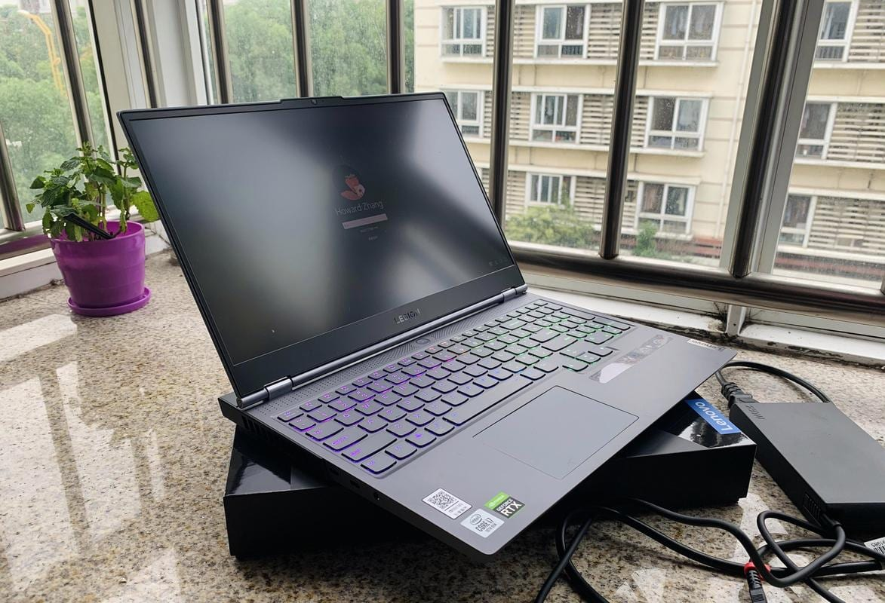

联想拯救者刃 9000K 2023

联想旗舰游戏台式机，酷睿 i9-13900KF 搭配 RTX 4080 旗舰显卡，32GB DDR5 内存与 1TB PCIe 4.0 固态保证流畅。360mm 一体水冷压制高功耗核心，全塔侧透机箱配幻夜 ARGB 灯效，接口与扩展位充足，适合追求 4K 高帧游戏与内容创作的高端玩家。
客观评测
刃 9000K 2023 采用 i9-13900KF 配 RTX 4080 的高端组合，4K 分辨率下主流 3A 大作高画质帧率普遍超过 90fps，3DMark Time Spy 显卡分约 2.6 万分。360mm 一体水冷在双烤中把 CPU 温度控制在 90℃ 上下，整机噪音约 48 分贝，表现符合旗舰定位。32GB DDR5 与 1TB PCIe 4.0 固态属主流偏上配置，主板预留额外 M.2 与内存插槽，升级空间充足，出厂走线整洁。
主观点评
用它跑《赛博朋克 2077》开启光追依旧丝滑，灯效联动很有氛围感，到手即用省去装机折腾。不过整机接近 20 公斤，搬运相当吃力，满载风扇声在深夜房间里偏吵，预装软件也需要花点时间清理。综合来看是一台省心的旗舰水冷游戏主机，适合预算充足、想一步到位的玩家。
优点与不足
- i9-13900KF 与 RTX 4080 组合，4K 高帧游戏无压力
- 360mm 水冷压得住旗舰硬件，长时间负载稳定
- 机箱扩展位与接口丰富，后期升级方便
- 整机价格较高，性价比一般
- 满载风扇噪音在安静环境下较为明显
- 机身沉重，搬运不便
参数规格
| 处理器 | Intel 酷睿 i9-13900KF（24 核 32 线程，睿频约 5.8GHz） |
|---|---|
| 显卡 | NVIDIA GeForce RTX 4080 16GB |
| 内存 | 32GB DDR5 5600（16GB×2） |
| 硬盘 | 1TB PCIe 4.0 NVMe SSD |
| 散热 | 360mm 一体式水冷 + 立体风道 |
| 电源 | 850W 80PLUS 金牌全模组（约） |
| 主板 | Intel Z790 芯片组 |
| 机箱 | 全塔侧透机箱，幻夜 ARGB 灯效 |
| 系统 | Windows 11 家庭版 |
| 前置接口 | USB-C、USB-A、耳机麦克风二合一 |
| 后置接口 | HDMI、DP、多个 USB-A、2.5G 网口 |
| 网络 | Wi-Fi 6E + 蓝牙 5.2 + 2.5G 有线 |
| 灯效 | 联想幻夜信仰灯效，支持整机联动 |
| 服务 | 三年上门保修 |